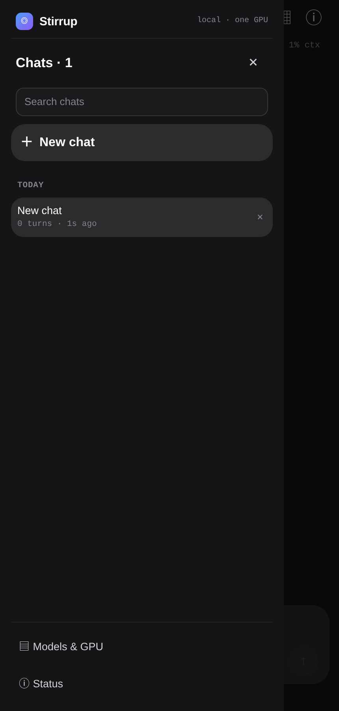
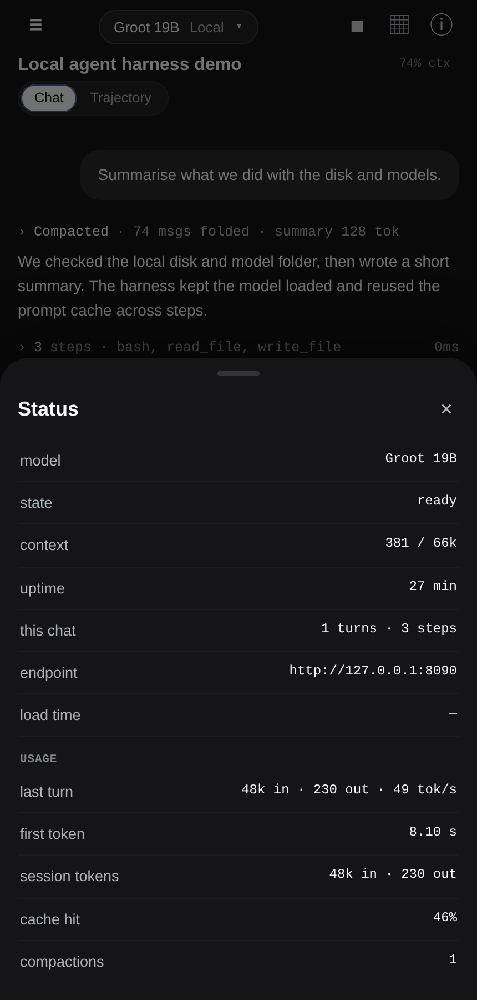
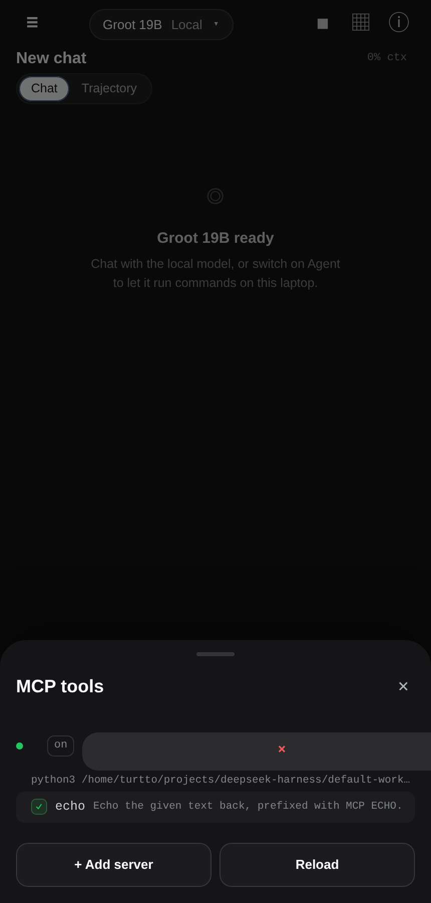
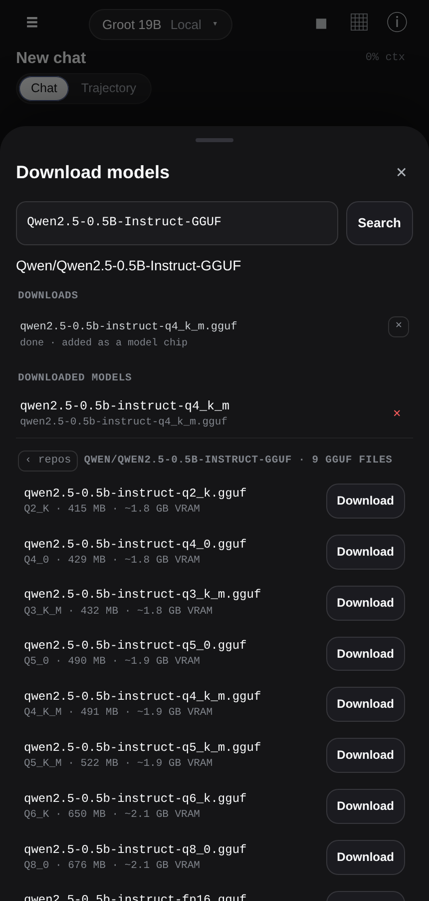
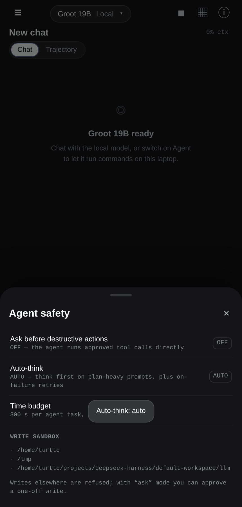
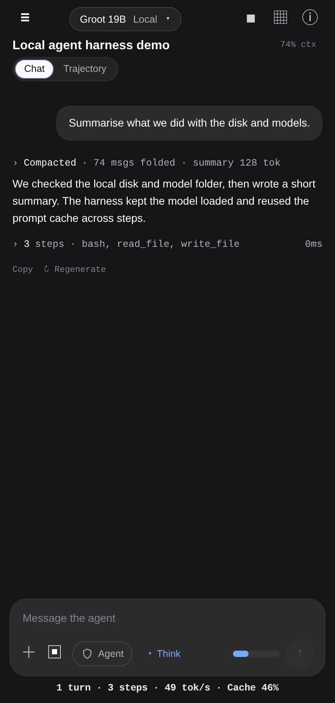

A phone-first harness for local llama.cpp models: model switching, an agent with real tools, MCP, voice, model downloads and synced chat history — on an RTX 5050 Laptop with 8 GB VRAM and 16 GB RAM.
A local LLM server + a phone UI + an agent loop, built around one hard constraint: only one model can live in 8 GB of VRAM at a time.
A Python harness manages llama.cpp backends, model chips and GPU ownership. It exposes an OpenAI-compatible API plus a phone-first web UI.
A PWA / tiny Android WebView shell over Tailscale. Chat, trajectory, model switching, history, approvals, voice and file downloads from the phone.
Model loading progress, per-turn tok/s, session sync, agent tools, MCP, context compaction, auto-think, usage stats and a local speech studio.
Everything stays on the tailnet. The phone never calls a cloud API; the laptop is the only compute.
Every chip is a separate llama.cpp config. The manager stops the old backend, frees VRAM and loads the next one. The phone shows progress and the load time.
| chip | model | size / VRAM | ctx | why it’s here |
|---|---|---|---|---|
| Groot 19B | Groot-19B-A3B TTQ IQ3_XXS | 7.9 GB / 6.8 GB | 64K | best all-rounder that stays fully on GPU |
| Bonsai 2 27B | Ternary Bonsai 2 27B PTQ1_0 | 5.5 GB / 6.9 GB | 16K | 27B-class ternary; PrismML fork; slower but stronger reasoning |
| ds9 | DeepSeek-V4-Pro-Qwen3.5-9B uncensored | 5.4 GB / 6.2 GB | 32K | uncensored math/STEM 9B |
| 4B / 9B Distill | Qwen3.8-4B / 9B (Empero) | 2.6 / 5.4 GB | 64K | fast small models distilled from Qwen3.8 2.4T |
| LFM3 1.7B | Liquid LFM3-1.7B | 1.1 GB / 1.7 GB | 64K | tiny fallback, 6/6 on the agent suite |
bash, read/write/edit files, grep, web search/fetch, systemd/port inspection, CSV/JSON, docs, memory.
Runs tests, checks output files, refuses to claim success with a failing command, re-checks stale files, retries once with thinking on.
stdio MCP servers, per-tool approval. In ask mode, destructive shell and out-of-sandbox writes pause for Approve/Deny.
At 80% of the window the oldest turns are summarised and folded into the system prompt; the UI shows folded messages, tokens and cache hit.
Local VoiceStudio TTS/STT tools; send generated audio/files to the phone over ADB; HF model downloader with sha256 verify.
Chat history is mirrored between laptop and phone; delete tombstones win; one model at a time keeps VRAM sane.
Six real tasks through the harness: machine state, file create + verify, systemd unit/PID/workdir discovery, CSV math, bug fix + test, live web research with API-verified facts. Same tasks, same machine — only the chip changes.
| model | result | wall time | notes |
|---|---|---|---|
| Groot 19B-A3B | 6/6 | 75.5 s | best quality / fit / speed balance |
| Bonsai 2 27B · medium effort | 6/6 | 205.5 s | 27B ternary; xhigh effort was 296 s |
| LFM3 1.7B | 6/6 | 46.7 s | tiny and fast, less headroom on hard tasks |
| Qwen3.8-4B Distill | 6/6 | 44.1 s | fast small model |
| Qwen3.6-35B-A3B | not run | — | IQ2 is 10.8 GB; needs CPU-MoE offload |
Vendor benchmarks: Groot’s card reports 41.44 avg across 16 benchmarks vs Qwen3.6-35B-A3B 38.08 and Gemma-4-26B-A4B 30.05, winning 12/16. Those are vendor-run suites — useful direction, not an independent head-to-head.
8 GB is the whole story. A model must fit with its KV cache; “best benchmark” means nothing if it needs 10+ GB before context.






One model at a time; 35B/27B-quant experiments are CPU-offload, not daily drivers. 64K on Groot is already tight.
No room for big MoE expert sets; the 32 GB upgrade is the next real unlock.
Tailnet-only, no public auth; phone ADB and file send assume the owner’s machine. Approval mode + write sandbox reduce risk for agent runs.
# phone UI + harness (one systemd user service) systemctl --user start local-llm-harness # full self-test: API + UI ./scripts/selftest.sh # 6-task agentic suite against the active chip python3 tests/harness_agentic.py --model groot # switch models from the phone: Models & GPU → chip
No cloud keys. No external inference. One laptop, one phone, one GPU.
Public page: trutto.github.io/stirrup · Writeup repo: github.com/trutto/stirrup